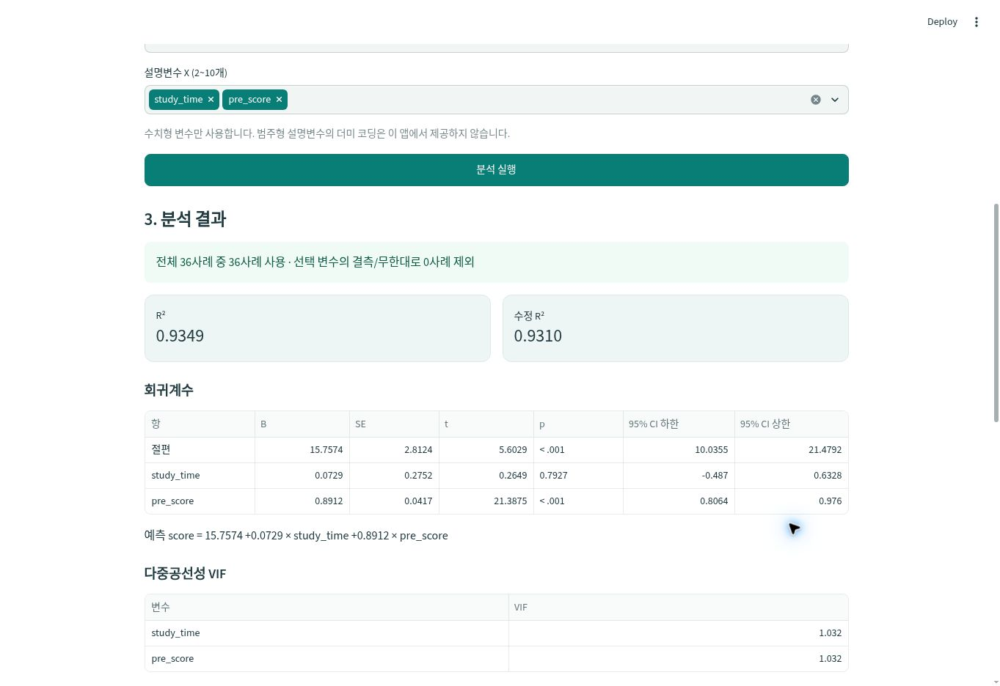
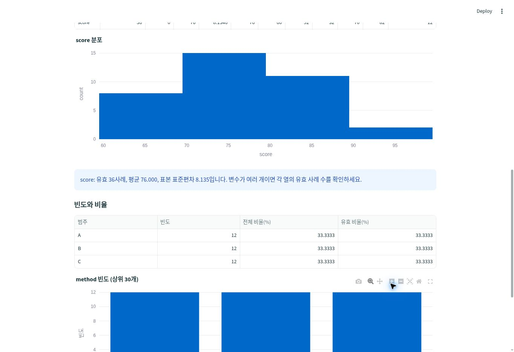

DATA LAB / VALIDATION
데이터 한눈에 검산보고서
제출자 은수현, 김정훈, 김응범 · 교수자 제공 기준 데이터 36사례를 이용한 계산 검증
기준 항목 34 / 34 일치
6개 Python 환경에서 각 59개 통과
브라우저 결과 다운로드 확인
기초통계부터 회귀, 일원·이원분산분석, 매개·조절효과까지 제공된 정답표의 모든 수치를 대조했다. 기준표의 마지막 표시 자릿수 절반을 허용 오차로 사용했으며, 기준값을 실제 계산에 덮어쓰지 않았다.
검산 조건
- 기초통계 표준편차는 표본 기준이며, 모형은 선택 변수의 완전사례를 사용했다. 기준 데이터는 모든 모형에서 36사례가 사용되었다.
- 이원분산분석은 상호작용 포함, Sum coding, Type II 제곱합이다.
- 매개효과 부트스트랩은 2,000회, 시드 42, percentile 95% 신뢰구간이다.
- 조절효과는 X·W 평균 중심화를 기본으로 하고 원점수 모형과의 불변성을 검사했다.
교수자 표의 p=0.000000은 반올림된 값이다. 앱에서 계산된 작은 양의 p값을 그대로 보존하고, 화면에는 < .001로 표시한다.
기준값과 계산값 비교
| 분석 |
항목 |
교수자 기준값 |
앱 계산값 |
절대 차이 |
허용 오차 |
판정 |
| 기초통계 |
사용 사례 수(n) |
36 |
36 |
0 |
0.5 |
일치 |
| 기초통계 |
평균 |
76 |
76 |
0 |
0.0005 |
일치 |
| 기초통계 |
표준편차 |
8.135 |
8.13458226 |
0.000417738358 |
0.0005 |
일치 |
| 기초통계 |
중앙값 |
76 |
76 |
0 |
0.0005 |
일치 |
| 기초통계 |
최소값 |
60 |
60 |
0 |
0.5 |
일치 |
| 기초통계 |
최대값 |
92 |
92 |
0 |
0.5 |
일치 |
| 단순회귀 |
R² |
0.033 |
0.0330380274 |
3.80273871e-05 |
5e-05 |
일치 |
| 단순회귀 |
절편 |
72.4268 |
72.4267857 |
1.42857143e-05 |
5e-05 |
일치 |
| 단순회귀 |
study_time B |
1.1089 |
1.10892857 |
2.85714286e-05 |
5e-05 |
일치 |
| 단순회귀 |
study_time p |
0.288707 |
0.288706827 |
1.72570321e-07 |
5e-07 |
일치 |
| 다중회귀 |
R² |
0.9349 |
0.934934344 |
3.43437128e-05 |
5e-05 |
일치 |
| 다중회귀 |
수정 R² |
0.931 |
0.930990971 |
9.02939556e-06 |
5e-05 |
일치 |
| 다중회귀 |
study_time B |
0.0729 |
0.072904381 |
4.380985e-06 |
5e-05 |
일치 |
| 다중회귀 |
study_time p |
0.792724 |
0.792723938 |
6.22769531e-08 |
5e-07 |
일치 |
| 다중회귀 |
pre_score B |
0.8912 |
0.891203605 |
3.60468266e-06 |
5e-05 |
일치 |
| 다중회귀 |
pre_score p |
0 |
6.52647821e-21 |
6.52647821e-21 |
5e-07 |
일치 |
| 일원분산 |
F |
14.0291 |
14.0290699 |
3.00915641e-05 |
5e-05 |
일치 |
| 일원분산 |
p |
3.9e-05 |
3.89682694e-05 |
3.17306284e-08 |
5e-07 |
일치 |
| 일원분산 |
A 평균 |
55.166 |
55.1659167 |
8.33333333e-05 |
0.0005 |
일치 |
| 일원분산 |
B 평균 |
58.193 |
58.1928333 |
0.000166666667 |
0.0005 |
일치 |
| 일원분산 |
C 평균 |
62.407 |
62.40725 |
0.00025 |
0.0005 |
일치 |
| 이원분산 |
method F |
266.3419 |
266.341933 |
3.26519325e-05 |
5e-05 |
일치 |
| 이원분산 |
grade F |
283.2311 |
283.231101 |
6.56845771e-07 |
5e-05 |
일치 |
| 이원분산 |
상호작용 F |
8.2607 |
8.26072345 |
2.34530738e-05 |
5e-05 |
일치 |
| 이원분산 |
method p |
0 |
1.68338398e-18 |
1.68338398e-18 |
5e-07 |
일치 |
| 이원분산 |
grade p |
0 |
7.63140432e-19 |
7.63140432e-19 |
5e-07 |
일치 |
| 이원분산 |
상호작용 p |
0.000174 |
0.00017376911 |
2.30889971e-07 |
5e-07 |
일치 |
| 매개효과 |
a |
0.8027 |
0.802696429 |
3.57142857e-06 |
5e-05 |
일치 |
| 매개효과 |
b |
1.53 |
1.53003473 |
3.47262348e-05 |
5e-05 |
일치 |
| 매개효과 |
c′ |
0.1383 |
0.138348375 |
4.83753754e-05 |
5e-05 |
일치 |
| 매개효과 |
ab |
1.2282 |
1.22815341 |
4.65896611e-05 |
5e-05 |
일치 |
| 조절효과 |
상호작용 B |
0.6786 |
0.678627411 |
2.74112978e-05 |
5e-05 |
일치 |
| 조절효과 |
상호작용 p |
0 |
6.05845185e-09 |
6.05845185e-09 |
5e-07 |
일치 |
| 조절효과 |
R² |
0.9743 |
0.974335492 |
3.54919638e-05 |
5e-05 |
일치 |
추가 검증과 해석
매개 간접효과 ab=1.228153, percentile 95% CI=[0.558469, 1.830954], 유효 재표집 2,000/2,000회이다. 이 신뢰구간은 제공 정답표에 없으므로 교수자 정답과의 일치 항목으로 계산하지 않았다. 고정 시드 재현성과 경로 항등식 c=c′+ab를 별도로 확인했다.
회귀는 NumPy 최소제곱과, 일원분산분석은 SciPy f_oneway와 독립 대조했다. 중복 변수·문자 혼입·결측·무한대·상수·공선성·표본 부족·빈 집단 조합·잘못된 파일을 자동 검사했다. Streamlit AppTest에서 7개 분석 메뉴를 실제로 실행했다.
Python 3.9.25, 3.10.22, 3.11.18, 3.12.14, 3.13.5, 3.14.10의 독립된 Linux 환경에서 각각 59개 검사를 통과했다. Python별 실제 설치 조합은 호환성보고서.md와 locks 폴더에 기록했다. 자세한 로그는 자동검사결과.txt, 설치 버전은 실행환경.txt를 참조한다.
실행 화면 확인
브라우저에서 기초통계와 다중회귀 결과를 확인하고 결과 엑셀을 다운로드했다. 다운로드 파일을 다시 열어 score 평균 76, n=36이 기록되어 있음을 확인했다. 아래 이미지는 실제 브라우저 화면의 일부이다.

다중회귀 결과와 사용 사례 수

기초통계 그래프와 빈도표
확인 범위와 남은 확인
자동 검사는 Python 6개 환경에서 수행했다. 화면 캡처는 최초 버전의 PC 브라우저 실행 결과이며 분석 화면과 계산 기능은 유지했다. Windows 및 macOS 실기기 검증은 수행하지 않았다. 실제 스마트폰, 모바일 화면 크기별 시각 검증 및 사용자 Wi-Fi 접속은 수행하지 않았다. 제출자가 README의 절차에 따라 본인 PC와 스마트폰에서 최종 확인해야 한다. 공용 서버나 GitHub 배포는 하지 않았다.
이 앱은 독립 관측을 전제로 하는 교육용 도구이다. 인과적 결론, 반복측정, 군집 자료, 로지스틱 회귀, Welch/Games–Howell 및 BCa 부트스트랩은 지원 범위 밖이다. 유의확률만으로 효과의 중요성을 판단하지 않는다.
재현 방법과 출처
앱 폴더에서 python -m pytest -q tests로 자동 검사를 실행한다. python docs/generate_report.py로 기준값 검산표를 다시 만든다. 보고서 생성은 새 브라우저 검사나 스마트폰 검증을 수행하지 않는다.
출처: 첨부 학생용 설명서, 통계앱 starter, 추가자료의 기준 데이터와 기준 결과. 원문 기준표는 data/교수자_기준결과_원문.md에 보관했다. 기준 데이터 SHA-256: 2bb53536e3a706871ea5cd53d7fdcc865231e47435d63d5c2864b3eb1cf2ff14